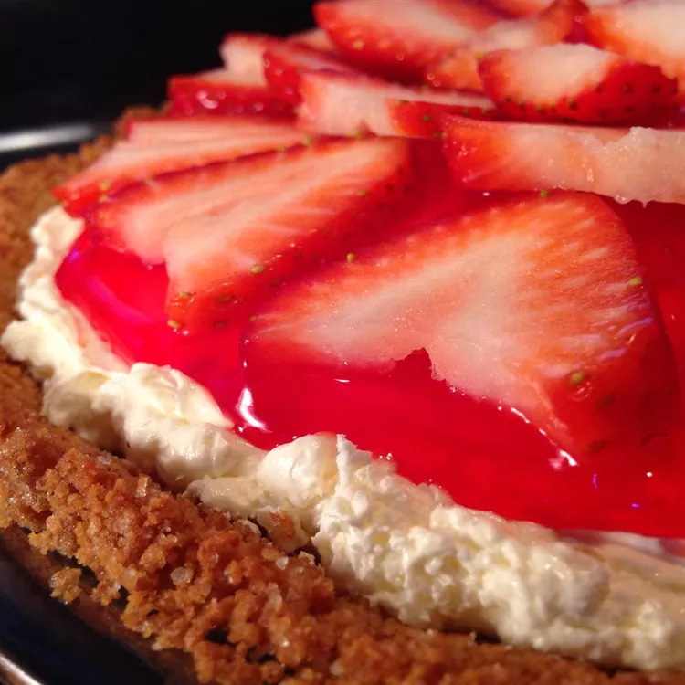

Berried Delight

Description
Glazed strawberries crown a fluffy cream
cheese filling in a graham cracker crust.
Top each slice with a dollop of whipped cream
or whipped topping for a delicious dessert.
Ingredients
- 1 package package reduced-fat cream cheese, softened.
- 1/3 cup confectioners' sugar.
- 1 teaspoon lemon juice
- 1 container reduced-fat whipped topping, thawed
- 1 graham cracker crust
- 1 pint fresh strawberries, sliced
- 1/2 cup strawberry glaze.
Steps
-
Beat cream cheese, confectioners' sugar, and lemon juice together
in a bowl with an electric mixer on low speed.
-
Add whipped topping and beat until filling is well-combined.
Spoon filling into graham cracker crust.
-
Stir strawberries and glaze together in a bowl until berries are coated;
lay berries over pie filling.
-
Refridgerate pie until chilled, at least 1 hour.